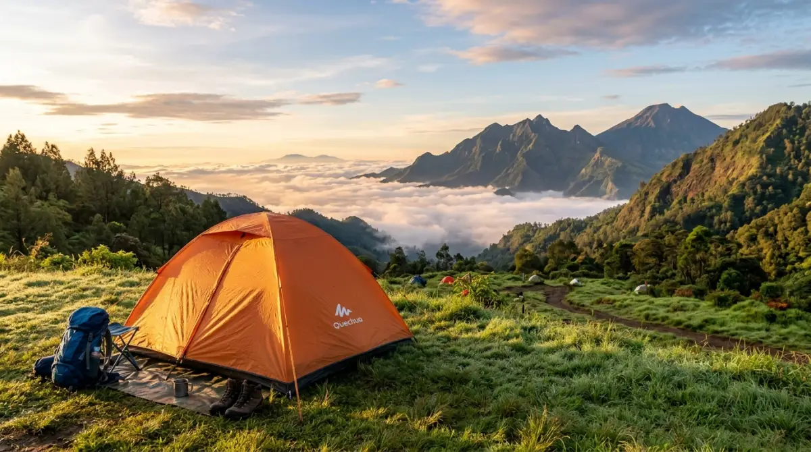
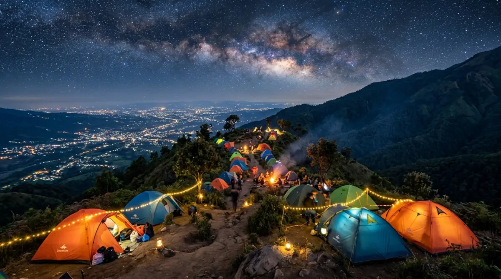

Perkemahan di Kota Batu menawarkan keseimbangan sempurna antara keliaran alam dan kenyamanan aksesibilitas.Pernahkah kamu duduk mematung di depan layar laptop, menatap rentetan kalender pertemuan yang seolah tak ada habisnya, lalu tersadar bahwa satu tahun lagi hampir berlalu begitu saja? Terjebak dalam rutinitas pekerjaan, rentetan rapat virtual, dan kejar-kejaran dengan tenggat waktu seringkali membuat kita lupa bagaimana rasanya bernapas lega tanpa beban.
Jangan sampai kamu baru menyadari betapa pentingnya mengambil jeda setelah tubuh dan pikiranmu memberikan sinyal burnout yang parah. Menunda liburan demi menyelesaikan satu proyek tambahan mungkin terdengar seperti dedikasi yang heroik, tapi percayalah, kenangan menatap bintang dan menghirup udara bersih tidak akan pernah bisa digantikan oleh lembur di akhir pekan.
Jika kamu butuh tempat untuk me-reset sistem pikiranmu, mencari perkemahan batu yang tepat adalah langkah pertama yang krusial untuk kembali menemukan ritme hidup. Mari kita telusuri destinasi terbaik di sana, agar kamu bisa segera merencanakan pelarian sementaramu sebelum penat itu berubah menjadi penyesalan.
Mengapa Perkemahan Batu Adalah Pelarian Sempurna dari Rutinitas?
Bagi kita yang sehari-hari berkutat dengan kemacetan kota, polusi udara, dan tekanan target pekerjaan, alam bukan sekadar tempat rekreasi, melainkan ruang terapi. Datang ke Kota Batu ibarat menutup puluhan tab browser yang terbuka secara bersamaan di dalam kepalamu. Secara geografis, Kota Batu terletak di ketinggian yang ideal, menawarkan suhu rata-rata 15 hingga 20 derajat Celcius yang menyejukkan.
Udara dingin pegunungan ini terbukti mampu menurunkan tingkat stres dan meningkatkan kualitas tidur—sesuatu yang mungkin sangat mewah bagi pekerja ibukota. Di samping itu, akses menuju berbagai lokasi perkemahan batu kini semakin mudah dijangkau dengan kendaraan pribadi. Kamu tidak perlu melakukan pendakian berjam-jam layaknya mendaki gunung ekstrem untuk bisa mendapatkan pemandangan kabut pagi yang magis atau gemerlap lampu kota (city light) di malam hari. Semuanya tersedia dengan keseimbangan sempurna antara keliaran alam dan kenyamanan aksesibilitas.
Rekomendasi Destinasi Perkemahan Batu Terbaik
Berdasarkan kelengkapan fasilitas, keamanan, dan keindahan panorama, berikut adalah kurasi lokasi kemah di Batu yang bisa kamu jadikan target liburanmu selanjutnya.
1. Batu Sunrise Camp: Menjemput Pagi Bersama City Light
Jika kamu mencari keseimbangan antara pengalaman alam yang autentik namun tetap tertata, tempat ini adalah jawabannya. Berada di titik yang cukup tinggi, Batu Sunrise Camp menawarkan atraksi utama berupa pemandangan matahari terbit yang membelah lautan awan, serta gemerlap lampu Kota Malang di malam hari layaknya taburan bintang di bumi.
Tempat ini juga sangat ideal untuk kegiatan experiential learning atau sekadar capacity building skala kecil bersama tim kerjamu. Menyeduh kopi di depan tenda sambil mendiskusikan hal-hal ringan di luar pekerjaan di sini rasanya mampu mencairkan ketegangan profesional apa pun.
2. Coban Rais Camping Ground: Menyatu dengan Alam Liar
Bagi kamu yang merindukan suasana klasik dan benar-benar ingin lepas dari peradaban (dalam artian positif), area kemah di sekitar air terjun Coban Rais bisa menjadi pilihan. Dikelilingi oleh hutan pinus yang menjulang tinggi, suara gemericik air sungai kecil di sini berfungsi layaknya white noise alami yang jauh lebih ampuh menenangkan pikiran dibanding playlist fokus di Spotify milikmu. Udaranya sangat bersih, menjadikannya tempat yang tepat untuk melatih ketahanan fisik dan mental secara ringan.
3. Apache Camp (Coban Talun): Menginap Unik Ala Suku Indian
Membawa keluarga atau rekan kerja yang tidak terlalu suka repot mendirikan tenda konvensional? Apache Camp menawarkan tenda permanen berbentuk kerucut khas suku Indian. Fasilitas di dalamnya sudah memadai layaknya penginapan standar. Ini adalah opsi transisi yang brilian jika kamu ingin memperkenalkan suasana perkemahan kepada anak-anak atau teman yang masih ragu untuk tidur di alam terbuka. Selain aman, tempat ini juga sangat estetis untuk kebutuhan konten media sosialmu.

Panorama alam Kota Batu yang memanjakan mata, dari puncak bukit hingga lembah hijau yang asri.4. Oak Tree Glamping Resort: Kemewahan di Tengah Hutan
Terkadang, tubuh kita terlalu lelah untuk sekadar memikirkan cara memasang pasak tenda. Jika kondisimu sedang seperti ini, pilihlah glamping (Glamorous Camping). Oak Tree Glamping ibarat memindahkan kamar hotel bintang empat ke tengah rimbunnya alam Batu. Kamu akan mendapatkan kasur empuk, air panas, AC, hingga layanan makanan, namun tetap dengan suasana dek kayu dan kanopi pepohonan. Ini adalah solusi turnkey—terima beres layaknya menyewa konsultan ahli untuk proyekmu—tanpa menghilangkan esensi berada di luar ruangan.
Tenda Sendiri vs Glamping: Mana yang Pas Untukmu?
Memilih gaya berkemah seringkali mirip dengan memilih gaya kepemimpinan di kantor; keduanya punya kelebihan masing-masing tergantung pada situasi dan sumber daya yang kamu miliki.
Membawa Tenda Sendiri (Kemah Konvensional)
Opsi ini sangat cocok jika anggaranmu fleksibel dan kamu memang mencari sensasi survival ringan. Membangun tenda, menyalakan kompor portabel, dan memasak mie instan di tengah udara dingin adalah proses yang membangun kebanggaan tersendiri. Biaya sewa lahan biasanya sangat terjangkau, berkisar antara Rp25.000 hingga Rp50.000 per malam. Namun, kamu dituntut untuk mandiri dan membawa perlengkapan yang lengkap agar tidak tersiksa oleh hawa dingin.
Glamping (Glamorous Camping)
Jika kamu hanya punya waktu libur akhir pekan yang sangat sempit dan tidak ingin energi habis untuk urusan logistik, glamping adalah jalan keluarnya. Kamu hanya perlu membawa pakaian ganti dan perlengkapan pribadi. Meskipun biayanya lebih tinggi (bisa mulai dari Rp400.000 hingga di atas satu juta per malam), kamu membayar untuk efisiensi waktu, kenyamanan premium, dan garansi tidur nyenyak tanpa perlu khawatir tenda bocor saat hujan turun.
Persiapan Wajib Sebelum Berkemah di Udara Dingin
Alam memang indah, tapi ia juga tidak kenal kompromi jika kamu datang tanpa persiapan. Agar pengalaman di perkemahan batu tetap aman dan nyaman, pastikan kamu memperhatikan prinsip-prinsip keselamatan dasar berikut ini:
- Sistem Pakaian Berlapis (Layering): Suhu di Batu saat malam hari bisa turun drastis. Tinggalkan kaos berbahan katun murni karena sulit kering jika terkena keringat. Gunakan base layer penyerap keringat, mid layer berbahan polar atau fleece untuk menghangatkan, dan outer berupa jaket tahan angin (windbreaker).
- Kualitas Kantong Tidur (Sleeping Bag): Jika kamu memilih kemah konvensional, jangan kompromi soal sleeping bag. Pastikan spesifikasinya sesuai untuk suhu 10-15 derajat celcius. Menggigil semalaman di dalam tenda akan merusak suasana liburanmu secara keseluruhan.
- Logistik dan Obat-obatan Pribadi: Bawa makanan berkalori tinggi yang mudah diolah. Jangan lupakan kotak P3K kecil berisi obat sakit kepala, obat tolak angin, plester, dan obat pribadi lainnya. Kondisi jauh dari apotek menuntutmu untuk menjadi manajer risiko bagi dirimu sendiri.
Penutup
Waktu akan terus berjalan maju, dan layar monitor serta tumpukan pekerjaan itu akan selalu ada di meja kerjamu esok hari, bulan depan, hingga tahun-tahun mendatang. Namun, momen di mana kamu bisa menyeduh secangkir kopi hangat di tengah udara dingin, ditemani suara jangkrik dan langit malam yang bersih tanpa polusi cahaya, adalah kemewahan eksistensial yang harus kamu ciptakan sendiri.
Jangan menunggu sampai penat menjadi beban yang terlalu berat untuk dipikul. Memilih satu dari sekian banyak opsi perkemahan di Batu bukan sekadar tentang memesan tempat liburan biasa, melainkan tentang keputusan sadar untuk menghargai kesejahteraan dirimu sendiri. Beri dirimu jeda sekarang, hiruplah udara segar itu dalam-dalam, agar kelak kamu tidak menoleh ke belakang dan menyesali waktu muda yang hanya habis terkikis oleh rutinitas tanpa makna.
FAQ